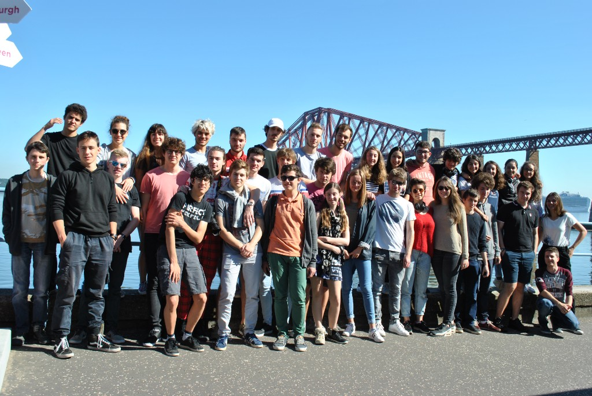
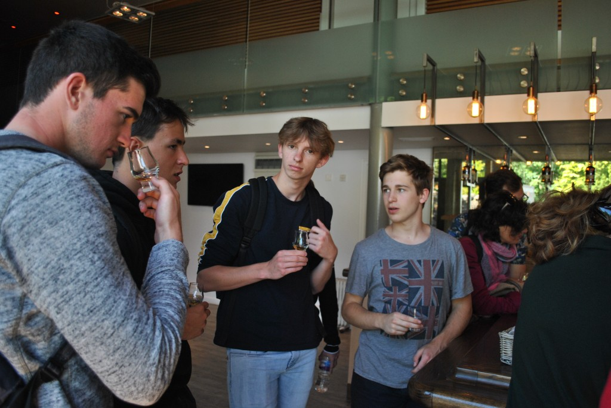

Lyon → Nancy → Cincinnati
Un parcours scientifique,
et international
A scientific path,
then an international one
Prépa à Lyon, diplôme d’ingénieur à Nancy, puis Master of Engineering aux États-Unis : une progression vers plus d’autonomie, d’embarqué et de software engineering.
Preparatory classes in Lyon, engineering degree in Nancy, then a Master of Engineering in the US: a path toward more autonomy, embedded work, and software engineering.
01
Lycée Jean Perrin
Lyon · 2018 — 2020
Lyon · 2018 — 2020
MPSI puis PSI. C’est là que se sont installées les bases : maths, physique, raisonnement, vitesse d’exécution et résistance au volume de travail.
MPSI then PSI. This is where the foundations were built: maths, physics, reasoning, execution speed, and the ability to handle a sustained workload.
Repère externe (DAUR 2025) : le lycée est cité autour de la 33e place nationale en filière MP — indicateur de niveau de l’établissement, pas de ma voie. J’y ai suivi MPSI puis PSI, pas MP.
External benchmark (DAUR 2025): the high school is listed around 33rd nationally in the MP track — a school-level indicator, not my path. I followed MPSI then PSI, not MP.
Source DAUR 2025 → DAUR 2025 source →
En MPSI, un voyage de classe en Écosse, à Édimbourg : une parenthèse plus légère dans une année très dense.
During MPSI, a class trip to Scotland, in Edinburgh: a lighter pause in an otherwise intense year.
L’Écosse : la plus ancienne trace écrite officielle de la distillation du whisky y remonte à 1494 dans les rouleaux de l’Échiquier écossais, mentionnant du malt pour faire de l’uisge beatha.
Scotland: the oldest official written record of whisky distillation there dates to 1494 in the Scottish Exchequer Rolls, mentioning malt to make uisge beatha.
TIPE : influence de la pression sur la flottabilité — vidéo d’expérience →
TIPE: how pressure affects buoyancy — experiment video →


02
ENSEM — Université de Lorraine
Vandœuvre-lès-Nancy · 2020 — 2023
Vandœuvre-lès-Nancy · 2020 — 2023
Ingénieur — Systèmes numériques
Engineer — Digital systems

Campus de Brabois, au-dessus de Nancy. Formation publique d’ingénieur avec un axe fort sur les systèmes numériques, l’électronique, l’automatique et le lien avec l’industrie.
Brabois campus above Nancy. Public engineering school with a strong focus on digital systems, electronics, control, and industrial ties.
Tronc commun ISN (syllabus ENSEM) : mathématiques et circuits électriques · automatique, informatique, signal · réseaux, IA, robotique, sûreté & sécurité · langues, communication, insertion pro. Spécialisation S9 : systèmes embarqués ou systèmes autonomes.
ISN core track (ENSEM syllabus): mathematics and electrical circuits · automation, computer science, signal processing · networks, AI, robotics, safety & security · languages, communication, career prep. S9 specialization: embedded systems or autonomous systems.
Programme ISN ENSEM → ENSEM ISN program →
Repères publics récents, cités par l’école : 34e sur 121 écoles d’ingénieurs au classement 2026 de L’Usine Nouvelle, et Top 5 en numérique / électronique / télécommunications.
Recent public markers, as cited by the school: #34 out of 121 engineering schools in the 2026 L’Usine Nouvelle ranking, and Top 5 in digital / electronics / telecommunications.
Source ENSEM / Usine Nouvelle → ENSEM / Usine Nouvelle source →
Projet mis en avant
Featured project
Robot SAMI
Plus court chemin, OptiTrack, interface et client TCP.
Shortest path, OptiTrack, UI, and TCP client.
After movie — campagne
After movie — campaign
Afficher la vidéo — After movie campagne Show video — After movie campaign Masquer la vidéo — After movie campagne Hide video — After movie campaign
Film présentation BDA
BDA presentation film
Afficher la vidéo — Film présentation BDA Show video — BDA presentation film Masquer la vidéo — Film présentation BDA Hide video — BDA presentation film
03
University of Cincinnati
Cincinnati, Ohio · Fall 2022 · double diplôme 2022 — 2023
Cincinnati, Ohio · Fall 2022 · dual degree 2022 — 2023

Master of Engineering en Computer Science, College of Engineering and Applied Science. Une année très formatrice, en anglais, dans un cadre plus professionnalisant et très orienté software engineering.
Master of Engineering in Computer Science, College of Engineering and Applied Science. A very formative year in English, in a more practice-oriented and software-engineering focused environment.
Programme
Program
General Computer Science
General Computer Science
Note : GPA 3.8/4.0
Grade: GPA 3.8/4.0
Cours suivis, entre autres :
Courses include:
-
Analyse intelligente de données
Intelligent data analysis
Algorithmes de clustering — Spectral Clustering, Gaussian Mixture Model
Clustering algorithms like Spectral Clustering or Gaussian Mixture Model
-
Systèmes intelligents
Intelligent systems
Réseaux de neurones — autoencodeur entraîné par rétropropagation
Neural networks as autoencoder trained with backpropagation
-
Sécurité et confidentialité des données
Data security and privacy
Chiffrement des données — Block Cipher, entre autres
Various ways to encrypt data like Block Cipher
-
Tests logiciels et assurance qualité
Software testing and quality assurance
Stratégie de test, Model-Driven Test Design
Testing strategy, Model-Driven Test Design
Repères publics U.S. News 2026 (graduate) : #105 sur 224 écoles d’ingénieurs, #115 en computer science.
Public U.S. News 2026 graduate markers: #105 out of 224 engineering schools, #115 in computer science.
Source U.S. News engineering → U.S. News engineering source →
Vlog — Pacers vs Raptors, Indianapolis (nov. 2022 · 118–104)
Vlog — Pacers vs Raptors, Indianapolis (Nov 2022 · 118–104)
Afficher la vidéo — Pacers vs Raptors Show video — Pacers vs Raptors Masquer la vidéo — Pacers vs Raptors Hide video — Pacers vs Raptors
Devoir : réaliser une lecture sur l’Input Space Partition Testing
Homework : do a Lecture on Input Space Partition Testing
Contexte
Context
Vidéo réalisée dans le cadre d’un devoir pour le cours Tests logiciels et assurance qualité — stratégie de test, Model-Driven Test Design — pendant mon double diplôme à l’University of Cincinnati en 2022. Je la laisse ici pour celles et ceux intéressés par le sujet — et pour me rappeler le niveau de mon anglais à l’époque.
Video created as part of an assignment for the Software testing and quality assurance course — testing strategy, Model-Driven Test Design — during my dual degree program at the University of Cincinnati in 2022. I let it here for those interested about the subject and for me to remember how bad my English was XD
Sujet
Subject
L’Input Space Partition Testing est une technique de test logiciel qui consiste à diviser les données d’entrée en partitions ou catégories, puis à tester le comportement du logiciel pour chaque partition. L’objectif est de s’assurer que le logiciel fonctionne correctement pour chaque entrée possible, y compris les cas limites et les valeurs inattendues. Les partitions sont créées en fonction des caractéristiques des données d’entrée et du comportement attendu pour chaque type d’entrée. En testant systématiquement chaque partition, le testeur peut identifier et isoler les défauts. Technique efficace pour les cas limites ; souvent combinée à d’autres méthodes pour une évaluation complète.
Input Space Partition Testing is a software testing technique that involves dividing the input data into partitions or categories and then testing the software’s behavior for each partition. The objective is to ensure that the software operates correctly for each possible input, including edge cases and unexpected input values. Partitions are created based on the characteristics of the input data and the expected behavior for each input type. By systematically testing each partition, the tester can identify and isolate issues or defects. An effective method for edge case defects; often used with other testing techniques for a comprehensive evaluation.
Afficher la vidéo — Input Space Partition Testing Show video — Input Space Partition Testing Masquer la vidéo — Input Space Partition Testing Hide video — Input Space Partition Testing
Une étude systématique du cryptojacking dans le monde réel
A Systematical Study about Cryptojacking in the Real World
Contexte
Context
Vidéo réalisée dans le cadre d’un devoir pour le cours Sécurité et confidentialité des données — chiffrement des données, Block Cipher, entre autres — pendant mon double diplôme à l’University of Cincinnati en 2022. Je la laisse ici pour celles et ceux intéressés par le sujet — et pour me rappeler le niveau de mon anglais à l’époque.
Video created as part of an assignment for the Data security and privacy course — data encryption, Block Cipher, among other topics — during my dual degree program at the University of Cincinnati in 2022. I let it here for those interested about the subject and for me to remember how bad my English was XD
Sujet
Subject
Nouveau mécanisme pour monétiser le contenu web, le minage de cryptomonnaie gagne en popularité. Une page web exécute une charge JavaScript supplémentaire sur la machine du visiteur pour résoudre des puzzles cryptographiques, souvent sans notification ni consentement explicite. Ce mécanisme, souvent détourné et considéré comme une menace (« cryptojacking »), toucherait plus de 10 millions d’utilisateurs web par mois ; pourtant peu de rapports existent et on sait peu sur sa gravité, son infrastructure et ses caractéristiques techniques. Probablement faute d’approches efficaces de détection à grande échelle (ex. VirusTotal).
As a new mechanism to monetize web content, cryptocurrency mining is becoming increasingly popular. The idea is simple: a webpage delivers extra workload (JavaScript) that consumes computational resources on the client machine to solve cryptographic puzzles, typically without notifying users or having explicit user consent. This new mechanism, often heavily abused and thus considered a threat termed “cryptojacking”, is estimated to affect over 10 million web users every month; however, only a few anecdotal reports exist so far and little is known about its severeness, infrastructure, and technical characteristics behind the scene. This is likely due to the lack of effective approaches to detect cryptojacking at a large-scale (e.g., VirusTotal).
Afficher la vidéo — Cryptojacking dans le monde réel Show video — Cryptojacking in the real world Masquer la vidéo — Cryptojacking dans le monde réel Hide video — Cryptojacking in the real world
Stack
Stack
Compétences
Skills
Langages
Languages
Python · C / C++ · Java · C# · TypeScript · SQL · MATLAB · Bash
Web & data
Web & data
HTML / CSS · JavaScript · Flask · REST · PHP · Git · Agile / Scrum
Mobile
Mobile
Flutter · Dart · Expo Go · TypeScript · iOS · Android
Embarqué
Embedded
STM32 · ESP32 · UART · I2C · SITL · PicoScope
IA
AI
Cursor · NanoEdge AI Studio
Cursor · NanoEdge AI Studio
Langues parlées
Spoken languages
Français (natif) · Anglais C1 · Espagnol B2
French (native) · English C1 · Spanish B2